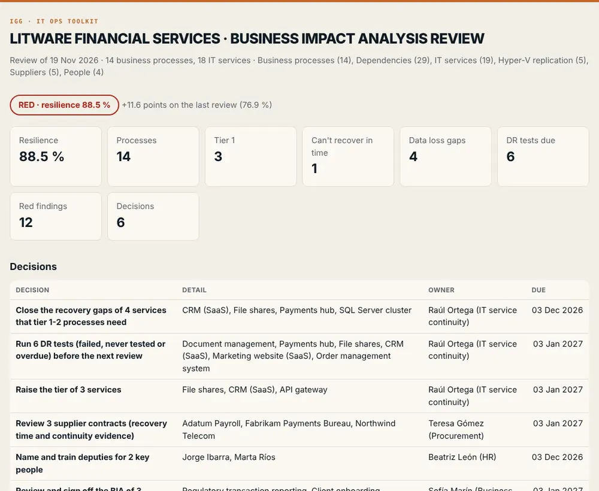

Settlement and reconciliation could be stopped for twelve hours before the damage became intolerable. The file shares it reads would take a day to come back, keep one restore point a day, are run as a tier 3 service and had never been part of a DR test. That is what the business impact analysis review published with this post finds. It is an open-source project that runs on sample data from a fictional financial services firm with its head office in Madrid and a disaster recovery site in Barcelona.
A business impact analysis, or BIA, asks each process owner what happens if the process stops for four hours, a day, three days or a week. The review takes those answers and the organisation's continuity policy and works out three figures for each process: the maximum tolerable period of disruption, the tier, and the recovery time and data loss it can accept. Settlement reaches a major impact after one day, so it is tier 2 and needs to be back within twelve hours.
A process is as fast as the slowest service under it
The review then follows each process down to everything it runs on. Settlement uses its own application, which a DR test brought back in ten hours, and that application needs the SQL cluster and the file shares. The file shares are the slowest link: a claimed 24 hours, never tested, with daily backups for a process that can lose one hour of data. The finding is red and lands on the file shares, not on the application everyone looks at first.
The same reading finds payments, which cannot lose any data, sitting on a database that keeps a restore point every 15 minutes, and a payments hub whose two-hour recovery has never been shown in a test. One replica of the risk engine stopped replicating the night before, so its real restore point is the four-hour backup. The order management system is a month past its six-monthly test, and document management failed its last one in February.
Outside IT
Not every gap is a server. The bureau that connects payments to the payment network promises four hours in its contract for a process that can only wait two. One person operates that network connection and nobody covers her, and another is the only one who runs the reconciliation scripts. The client service desk has no alternate site, two suppliers have no current continuity evidence and three BIAs are out of date or unsigned.
Each process gets a resilience score. The demo scores 88.5%, with 12 red and 17 amber findings, and ends with six decisions: close the recovery gaps of four services, run six DR tests, raise the tier of three services, review three supplier contracts, train two deputies and review three BIAs. The review also lists the order in which to bring services back: the network first, then directory and databases, then the applications that need them, the most urgent first.
How to use it with real data
The repository includes a PowerShell script that only reads the Hyper-V Replica status of each host; the processes, their dependencies, the services with their DR tests, suppliers and key people go in CSV files. Tiers, recovery factors and test frequency are the organisation's own policy in a settings file. It runs on Python with no external dependencies and produces a web report, a one-page pack for the continuity steering committee and CSV files with every process, service, test and action. The demo data is fictional: names, services, suppliers and dates.
Where it comes from
The tool comes from supervising disaster recovery and business continuity tests, designing and testing backup and DR plans, applying ISO 22301 and ISO 27001, working with Veeam, Commvault, Hyper-V and vSphere, and running availability and capacity management as a formal practice.
Want to bring it to your environment or adapt it to your case? Get in touch and we can look at it together.
Tech Career Lab · newsletter
Found this useful? Every two weeks I send one practical idea for IT professionals: LinkedIn, projects, networking and hiring processes.
Sign up and get the 33 ideas →